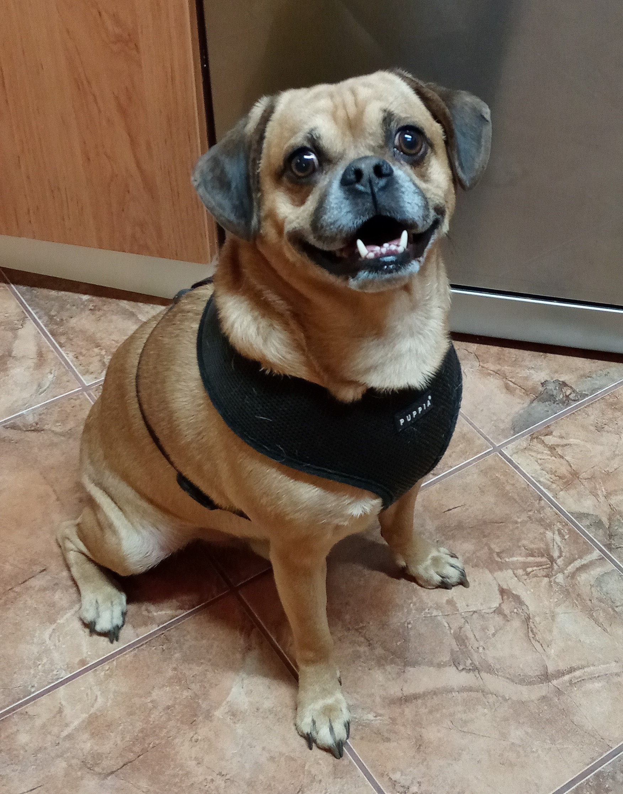

Kdo jsem?
Ahoj, jsem pes Bailey (čti Bejli) a hledám nový domov. Momentálně patřím pod spolek Dočasky De De. Jestli se chceš o mně dozvědět víc, čti dál.
Proč hledám domov?
Moje panička se dostala do životních nesnází a už se o mě a mou psí sestru nemohla dál starat. Den před tím, než přišla o bydlení, mě ale hodná paní z Dočasek odvezla k mým dočasným páníčkům - Pavlínce a Ondrovi, a teď s nimi bydlím v Praze.
Něco o mně
Mám krátký čumák a zatočený ocas, takže určitě musím být kříženec mopse. Je mi 5 let, vážím 14 kg a díky pohybu a dietním granulím se postupně dostávám do formy.
Jsem opravdu hodný, čistotný, veselý a dokonce umím i pár povelů. Zbožňuji procházky, ale na vodítku někdy trochu tahám - a že mám sílu! A co dělám přes den? Nejradši jsem v pelíšku, ležím na dece a nebo okouním v kuchyni - to je moje oblíbené místo.
Lidi i psy mám moc rád, všechny nadšeně vítám a rozdávám pusinky. Když přichází návštěva, funguji jako zvonek a štěkotem oznamuji, že se někdo blíží.
Můj nový domov
Moji dočasní páníčci mi hledají nový, stálý domov. A na výběru si prý dají záležet.
Chtěl bych k sobě někoho aktivního, kdo má rád pohyb a dokáže mě na vodítku usměrnit. Starší babičky nebo dědové mě neutáhnou. Rád bych bydlel v bytě a za dalšího psího kamaráda nebo kamarádku bych byl moc rád.
Když jsem sám, nahlas vyju a stýskám si. Takže prosím, buď se mnou po celý den a nebo si mě klidně ber do práce, jestli můžeš. Jízdu autem snáším dobře, většinou si lehnu a spím. MHD je pro mě výzva, ale učím se.
Chceš mě adoptovat?
Nejlepší by bylo, abychom se předem seznámili a zjistili, jestli k sobě patříme. Musí přeskočit jiskra! Domů půjdu očkovaný, odčervený a kastrovaný. Nezapomeň, že bude třeba zaplatit adopční poplatek.
Koukni na mě
Ozvi se, už se těším
Myslíš, že bychom se k sobě hodili?
Zavolej na 730 148 900 nebo mi pošli email.
 Tvůj Bailey
Tvůj Bailey